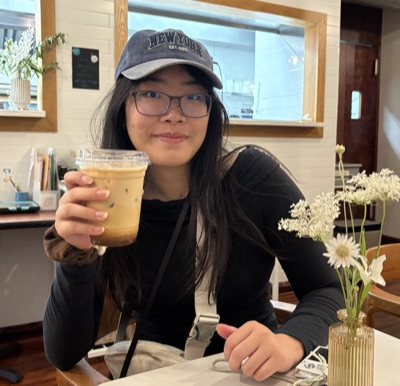
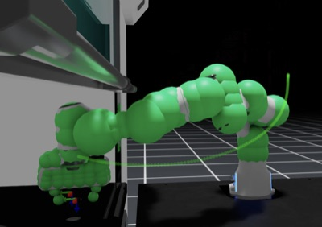
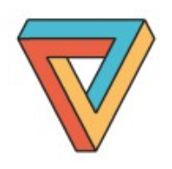
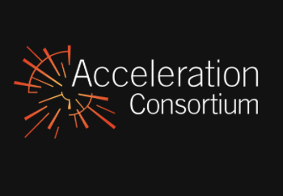
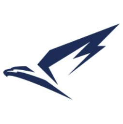

Yijie Wang
I'm an undergraduate robotics engineering student at the University of Toronto. I study how embodied agents can learn representations that generalize in the physical world, currently through latent world models for prediction and planning. I'm also interested in the science of robot learning and interpretability, in understanding what these learned representations encode. My goal is to build robot models that are causally grounded and verifiable, so that we can trust them in the real world.
I'm working with Dr. Kashyap Chitta and Prof. Andreas Geiger at KE:SAI on action-conditioned world models for autonomous driving, and writing my thesis with Prof. Florian Shkurti at the Robot, Vision & Learning Lab on learning dynamics for manipulation. Before that, I worked on simulation and motion planning for autonomous vehicles and robotic chemistry labs.
I'm looking for Master's and PhD positions in robotics research starting Fall 2027.
News
Publications

@article{darvish2025matterix,
title = {MATTERIX: toward a digital twin for robotics-assisted chemistry laboratory automation},
author = {Darvish, Kourosh and Sohal, Arjun and Mandal, Abhijoy and Fakhruldeen, Hatem and Radulov, Nikola and Zhou, Zhengxue and Veeramani, Satheeshkumar and Choi, Joshua and Han, Sijie and Zhang, Brayden and Chae, Jeeyeoun and Wright, Alex and Wang, Yijie and Darvish, Hossein and Zhao, Yuchi and Tom, Gary and Hao, Han and Bogdanovic, Miroslav and Pizzuto, Gabriella and Cooper, Andrew I. and Aspuru-Guzik, Al{\'a}n and Shkurti, Florian and Garg, Animesh},
journal = {Nature Computational Science},
year = {2025},
doi = {10.1038/s43588-025-00924-4}
}
Research Experience


Engineering Experience
